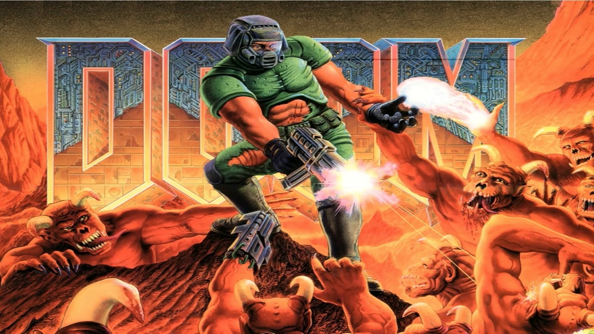
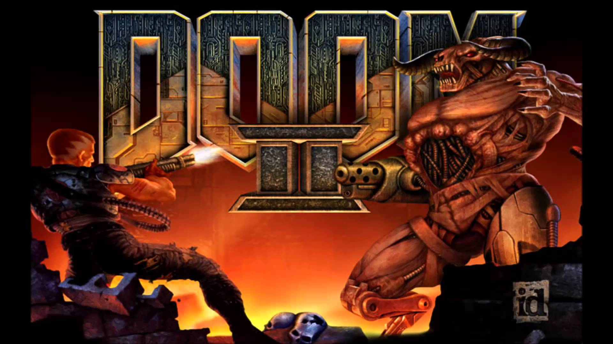
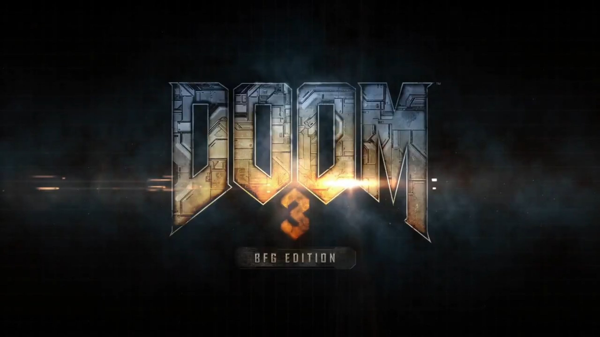
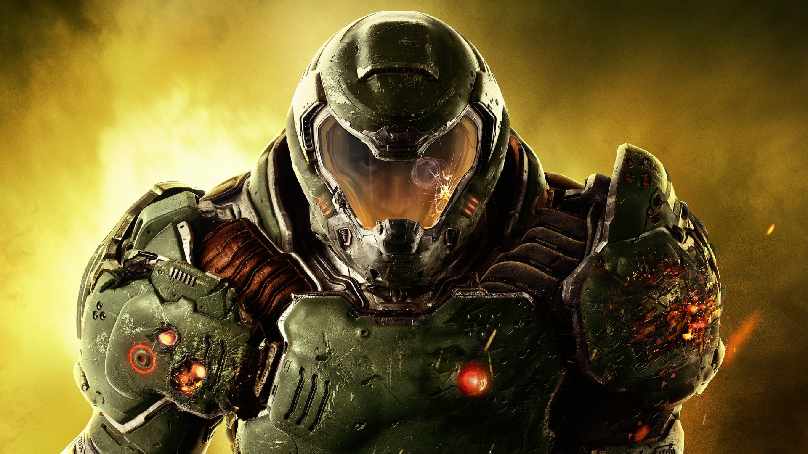

A DOOM egy belső nézetes lövöldözős játék, aminek első részét az Id software adta ki 1993-ban. Ez volt az első ilyen nézetű játékoknak az egyike, s újításaival fontos mérföldkőnek számít nemcsak e műfaj, hanem általában a számítógépes játékok történetében is.
DOOM (1993)

A játékos egy névtelen tengerészgyalogost alakít (a rajongók csak egyszerűen Doomguy-nak nevezik), akit a Marsra küldenek, hogy ölje meg a rangelső katonatisztet, mivel egy értelmetlen mészárlást rendelt el a bolygón. A katonatiszt a UAC-nek (Union Aerospace Corporation, magyarul „Egyesült Űripari Vállalat”) dolgozik, amely egy katonai egyesület és titkos teleportációs kísérletekkel foglalkozik a Mars holdjai között (Phobos, Deimos). A főszereplőt egy jelentéktelen biztonsági szolgálatba állítják, ám hamarosan valami hiba történik egy teleportációs kísérlet folytán és különböző teremtmények jönnek elő a pokolból a teleportkapun keresztül. A katonai védekezés kudarcba fullad, nem tudják megállítani az inváziót és a bázist hamarosan uralmuk alá vonják a démonok. A Marsról kiküldik a UAC csapatot a Phobosra, hogy megvizsgálják az incidenst, de a rádiókapcsolat megszakad és csak egyetlen túlélő marad hátra, mégpedig maga a játékos, akinek egyetlen feladata maradt hátra: kijutni ebből a pokolból.
DOOM 2

A Doom II: Hell on Earth (vagy csak egyszerűen Doom II) egy videojáték, a Doom-sorozat második része, amelyet az id Software fejlesztett ki. 1994. október 10-én a GT Interactive adta ki IBM-kompatibilis PC-kre, s az előző résszel ellentétben, ezt már a boltokban is meg lehetett vásárolni. 1995-ben a játék megnyerte az Origins-díjat 1994 Legjobb Fantasy vagy Sci-Fi Videojátéka címen,[1] majd december 26-án egy kiegészítő csomag is megjelent a játékhoz Master Levels for Doom II címen, amely húsz új pályát tartalmazott.[2] A Doom II-t rengeteg platformra adták ki, mint például Apple Macintosh-ra, PlayStationre és Nintendo Game Boy Advance-re is, így elég népszerű lett a játék.
Történet
A Doom II nagyjából követi az előző Doom rész történetét és újra annak a névtelen tengerészgyalogosnak a bőrébe bújhat, aki túl keménynek bizonyult a pokol erőivel szemben. Miután a Tengerészgyalogos a Phobos-ról elteleportálódott a pokol másik szegletére, a Deimos-ra, visszakerül a Földre, amit szintén megszálltak a pokolbéli teremtmények.
DOOM 3

A Doom 3 egy sci-fi környezetű, túlélőhorror-szerű, FPS stílusú videojáték, amelyet az id Software fejlesztett és az Activision adott ki PC-re 2004. augusztus 3-án. A Doom 3 a Doom-sorozat harmadik része és egyben az előző két rész feldolgozása, modern grafikával és egy díjnyertes, id Tech 4-ra keresztelt motorral, amelyet már számos más játékhoz is felhasználtak.[6] Később a játékot átírták Linuxra, Mac OS X-re és Xboxra is, a többjátékos módban pedig a Splash Damage nevű cég segédkezett.[1]
Történet
A történet úgy szól, hogy 2145-ben a Union Aerospace Corporation (UAC) vállalat akkorára nőtt, hogy építtetett egy kutatóbázist a Marsra. Ezen a bázison a UAC-nek lehetősége van a tudomány számos területén kutatásokat és kísérletek folytatnia, s így például teleportációval, biológiai kutatásokkal, űrkutatással és fejlett katonai fegyverekkel is foglalkozhatnak. A UAC létesítmény pozíciója miatt különböző kísérletek hajthat végre a Marson a törvényes és erkölcsi határokon kívül.[21] A játék során a játékos észreveheti, hogy az ottani alkalmazottak rendezetlen életkörülmények között élnek és a különféle incidensek miatt (például furcsa hangok, megmagyarázhatatlan jelenségek) néhányan paranoiásak és elmebetegek lettek, amivel nagy bajt okoztak a létesítménynek. Az alkalmazottak között az a szóbeszéd is elterjedt, hogy feloszlatják a UAC Delta Laboratóriumát. Ám egy véletlen kísérlet folytán portált nyitnak a pokolba, ahonnan gonosz démonok lepik el a bázist. A főhősnek, akinek csakúgy, mint az előző részekben, itt sincs neve, végig kell küzdenie magát az egész bázison, hogy megállítsa a démonokat még mielőtt azok ellepnék a Földet is.[16] A játék végén a főellenség sikeres megölésével véget ér az invázió.
DOOM (2016)

a Doom-sorozat negyedik része, melynek fejlesztésének elkezdését 2008. május 7-én jelentette be az id Software. A játék 2016. május. 13.-án jelent meg PC-re, Playstation 4-re, Xbox One-ra, majd a konzol megjelenése után nem sokkal Nintendo Switch-re is. A játék igen nagy sikert aratott, rengeteg érdekesség, látványosság és meglepetés található benne.
Történet
A játék története úgy kezdődik, hogy a pokol erői megtámadták a Marsot. A UAC (United Aerospace Corporation) bázisait ellepték a démonok. A történet főhősének, Doomguy-nak pedig végig kell küzdenie magát az egész marsi bázison, sőt még a poklon is, hogy megállítsa a gonosz Dr.Olivia Pierce ármánykodásait, aki ezt az egészet eltervelte. Végül megtaláljuk őt, viszont a Pokol erői elárulták őt, és megátkozták. Ezután hosszú harc árán Hayden visszahoz minket a Marsra, ahol bebörtönöz minket, hogy ne avatkozzunk közbe.